Qui sommes-nous
Une bande de potes, une identité forte : notre maillot.
Sept pionniers, 16 licenciés FFC aujourd’hui : un collectif soudé qui roule, court et crée ensemble.
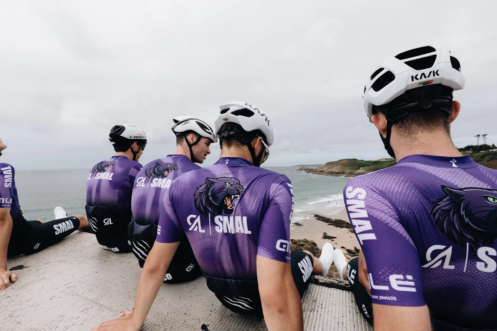
Notre esprit
Créer pour oser.
- Valeurs
- Dépassement de soi · Rigueur · Engagement · Esprit d’équipe
- Fondateurs
- 4 amis cyclistes
- Aujourd’hui
- 16 licenciés FFC, dont 10 membres de la Team
SMAL & CO, c’est une équipe avant d’être un club : des amis qui partagent les mêmes valeurs, sur le vélo, en course à pied et derrière la caméra.
SMAL & ; CO est la marque du collectif. Juridiquement, elle est portée par l’association SMAL, loi 1901, déclarée à Brest le 13 janvier 2026.
Le noyau fondateur
Les 4 fondateurs
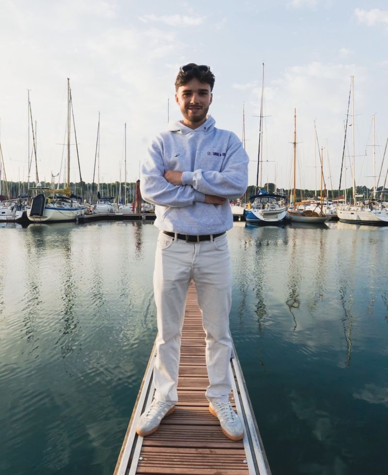
Matthieu Bruno
Président et Co-fondateur
Quatre ans de compétition avant de passer au « vélo plaisir » avec les copains. Pilote les social rides, le running et les partenariats.
« Allier la réalisation d’objectifs ambitieux à la transmission de valeurs humaines fortes. »
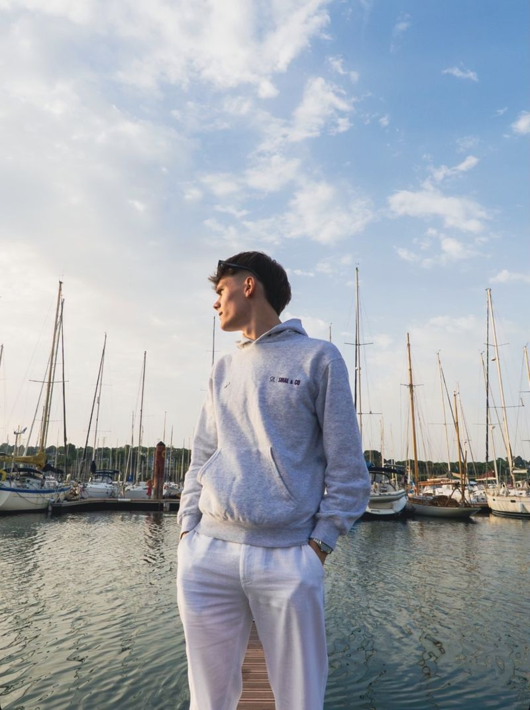
Lucas Blonce Lossec
Secrétaire et Co-fondateur
Photographe sportif (Tro Bro Léon, Tour du Finistère, Trophée Centre Morbihan). Porte la communication et l’image du club.
« Construire un projet durable, crédible et inspirant. »
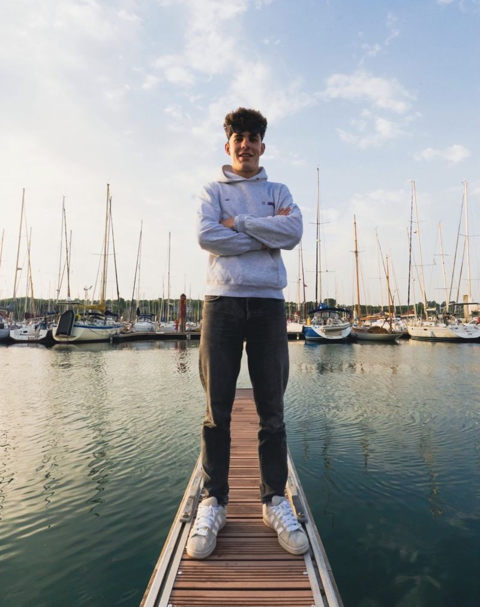
Alexis Le Dez
Trésorier et Co-fondateur
Ancien coureur devenu mécanicien, jusqu’au World Tour. Gère le club, les partenaires, les événements et la mécanique de l’équipe.
« Exigence, rigueur et engagement. »
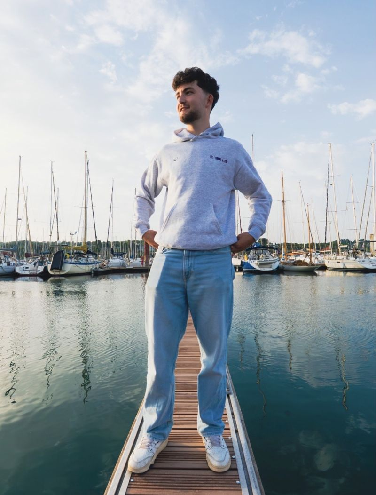
Maël Guittet Grard
Responsable et Co-fondateur
Six ans de compétition, il roule aujourd’hui pour le plaisir simple de rouler et d’explorer. En charge des défis et de l’engagement.
« À quatre, on va plus loin que tout seul ! »
Les pionniers
Les 7 premiers membres
Aux quatre fondateurs, Matthieu, Lucas, Alexis et Maël, se sont joints, dès juin 2026, les trois premières recrues de SMAL & CO. Ensemble, ils étaient sept au départ de l’Étape du Tour 2026.
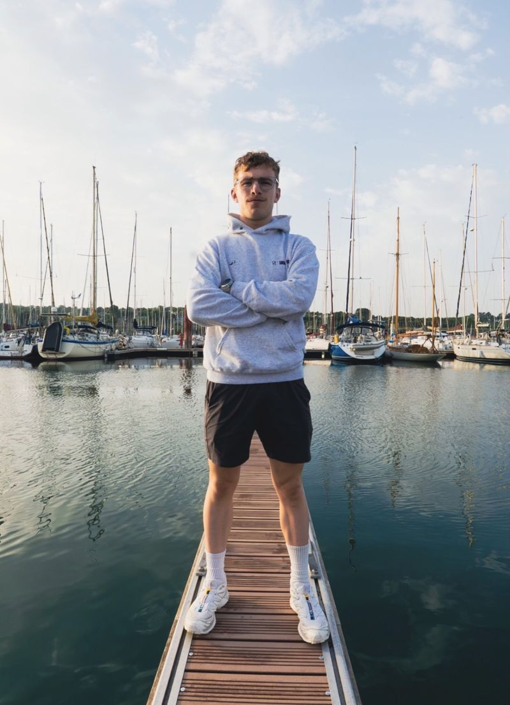
Ewen Prémel
Course à pied · Cyclisme
2e du trail de Guerlédan 2026 (36 km), 4e du trail de l’Aber Wrac’h 2026 (60 km).
« L’énergie collective au service du dépassement et de la performance. »
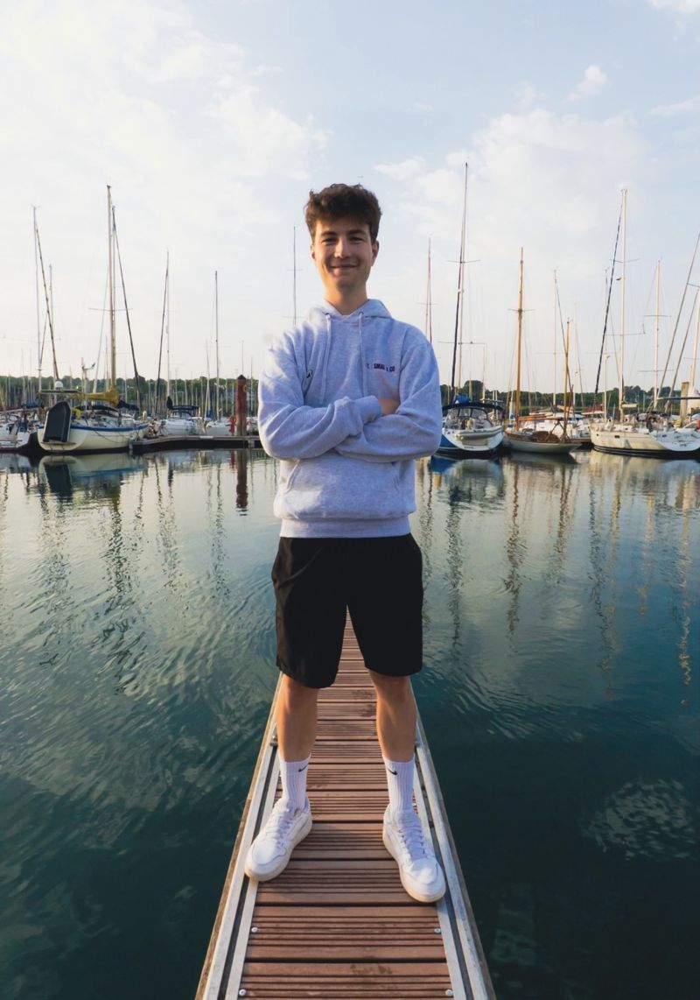
Evann Balcon
Cyclisme
Vainqueur du Grand Prix du Folgoët.
« Une équipe soudée, où chaque effort individuel bâtit l’aventure commune. »
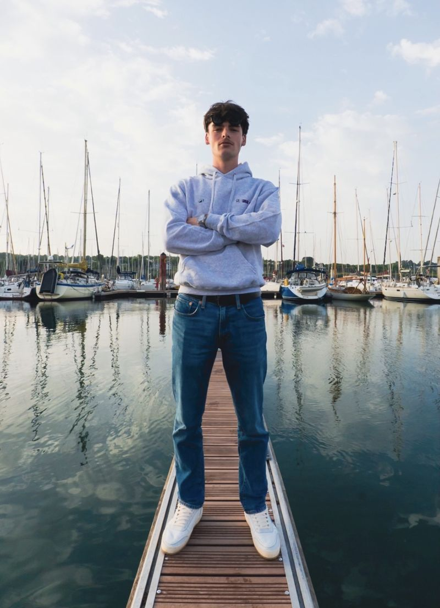
Evan Floch
Course à pied · Cyclisme
Toujours partant, sur la route comme sur les sentiers.
« L’exigence de l’entraînement, portée par la bonne humeur et l’esprit d’équipe. »
L’équipe aujourd’hui
Et la bande s’agrandit.
- 16 licenciés FFC depuis septembre 2026, dont 10 membres de la Team
- Des social rides qui réunissent en moyenne 50 personnes
- Une section running et trail née sur les sentiers de Guerlédan
- Des projets communs : critérium à Brest, saison 2027, podcast
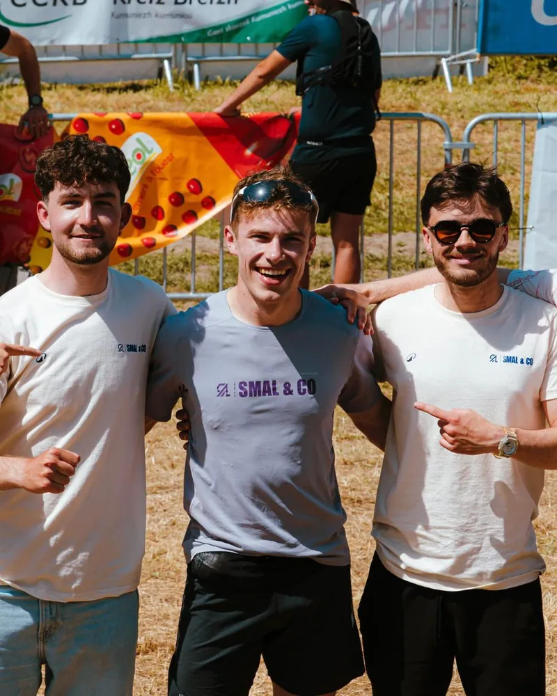
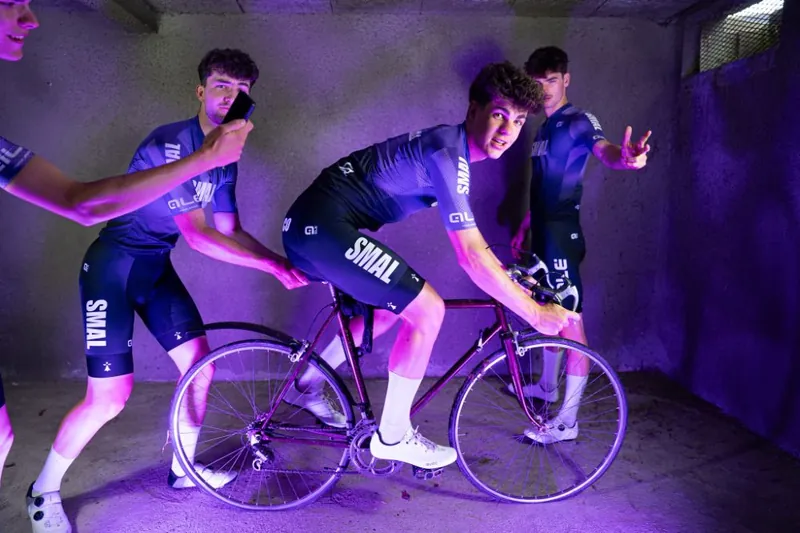
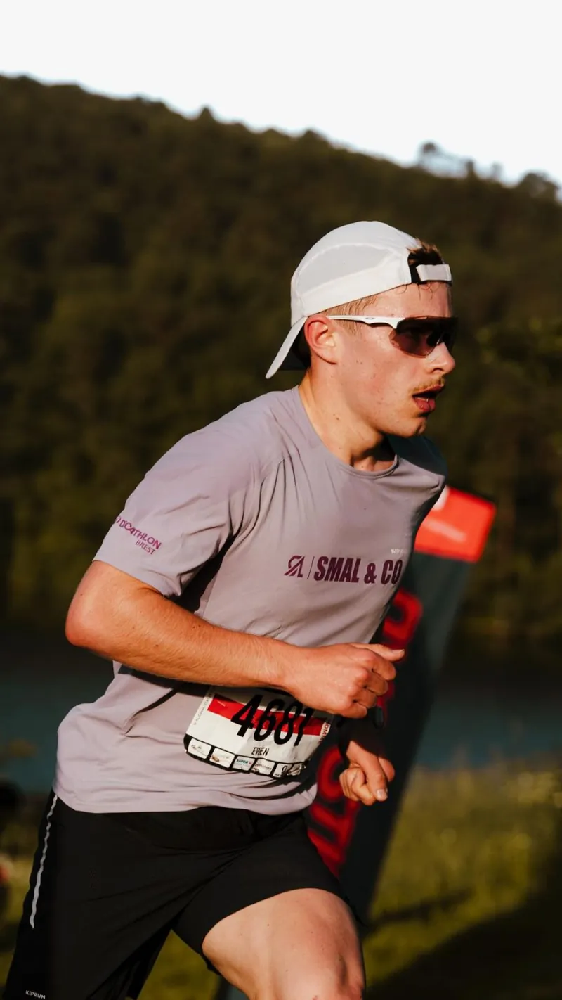
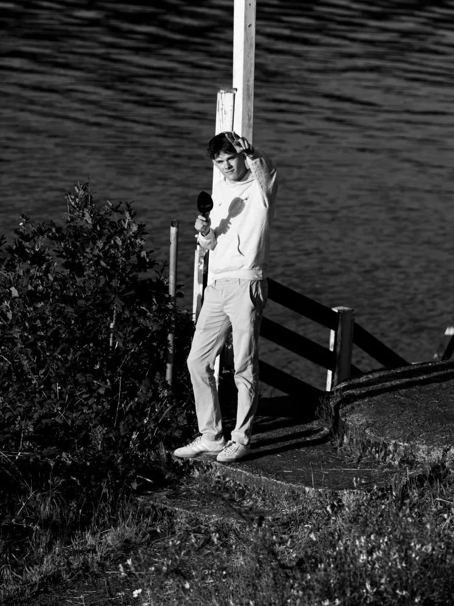